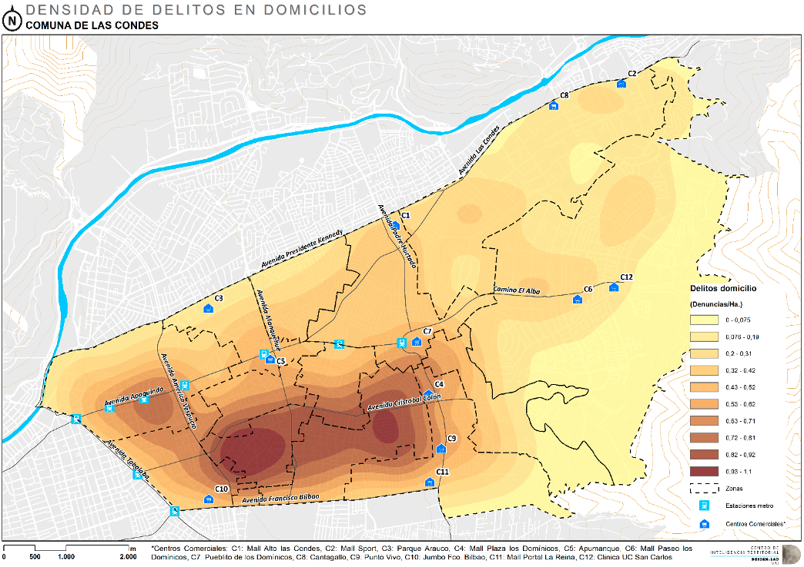

1 Introducción Estadística Espacial
Módulo 1: Teórico
1.1 Objetivos
 * Conocer teóricos fundamentales de la estadística espacial.
* Conocer teóricos fundamentales de la estadística espacial.
1.2 Origen de la Estadística
Estadística deriva del italiano statista (hombre de Estado) y se desarrolla desde la antigüedad para facilitar la gestión tributaria y estimar la capacidad bélica de un reino. Ej: censos egipcios desde el 3050 a.C.
Durante la expansión de los imperios coloniales (siglos XVI - XIX) se desarrolla la estadística en estrecha relación con la cartografía, principalmente para la administración y dominio de territorios.
1.3 Estadística vs Estadística Espacial
Estadística:
- Análisis de la estructura de datos representativos de una población (en áreas arbitrarias)
- Se basa en matemáticas relativamente complejas
Geoestadística
- Análisis de relaciones de dependencia espacial entre datos georreferenciados
- Complejidad de cálculo que hacía inviable su uso masivo
1.4 Condideraciones generales
La inferencia estadística convencional se basa en dos supuestos fundamentales
- Los valores de una variable se distribuyen de forma aleatoria
- Los valores de una variable son independientes unos de otros
Pero ninguno de estos dos supuestos se cumple al utilizar datos espaciales, ya que:
- Los fenómenos más próximos en el espacio están más estrechamente relacionados entre sí (Ley de Tobler, 1970) *La historia, el espacio y la sociedad se co-producen, por lo que el espacio tiene un rol activo en la reproducción y acumulación de fenómenos sociales (Lefebvre, 1974)
Para resolver esta limitación existen dos enfoques principales
- La econometría espacial, que trata el efecto espacial como un error y lo elimina para generar estimaciones sin sesgo
- La geoestadística, que identifica y cuantifica el efecto que el espacio genera en la estructura de la información
1.5 Ejemplos de Correlación Espacial
1.5.1 Autoproducción: Tráfico de Drogas
1.5.2 Co-producción: Mercado inmobiliario local
1.5.3 Segregación y delincuencia


1.5.4 Valores de Vivienda
1.6 Inconsistencia estadística de datos espaciales agregados: MAUP
Modifiable Areal Unit Problem: inconsistencia de indicadores estadísticos al modificar los perímetros de agregación (Gehlke & Biehl 1934, Openshaw & Taylor 1979)
En general, es recomendable trabajar con datos a la menor escala posible, o agregarlos en zonas homogéneas